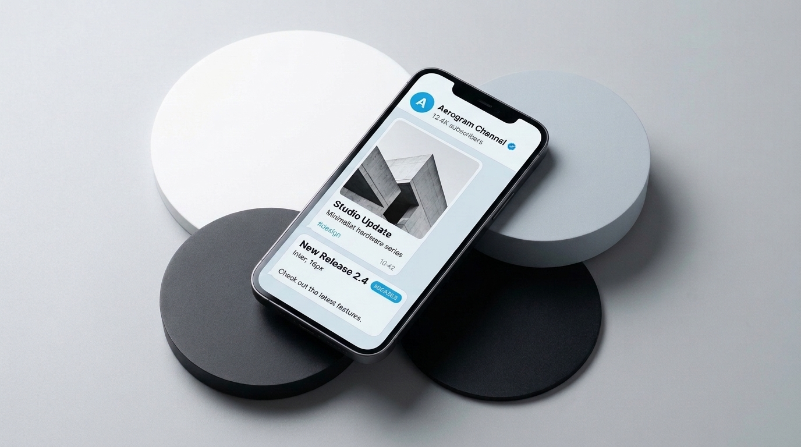
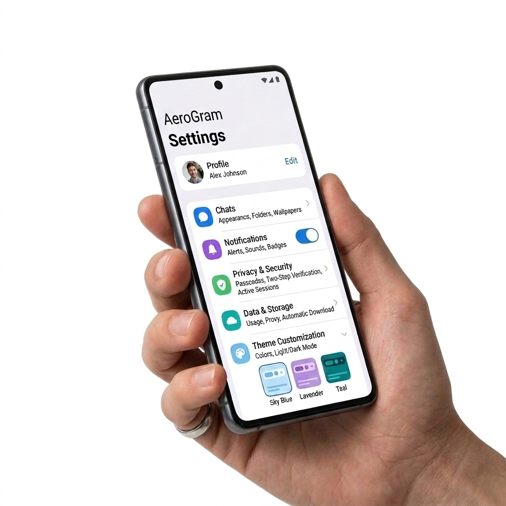
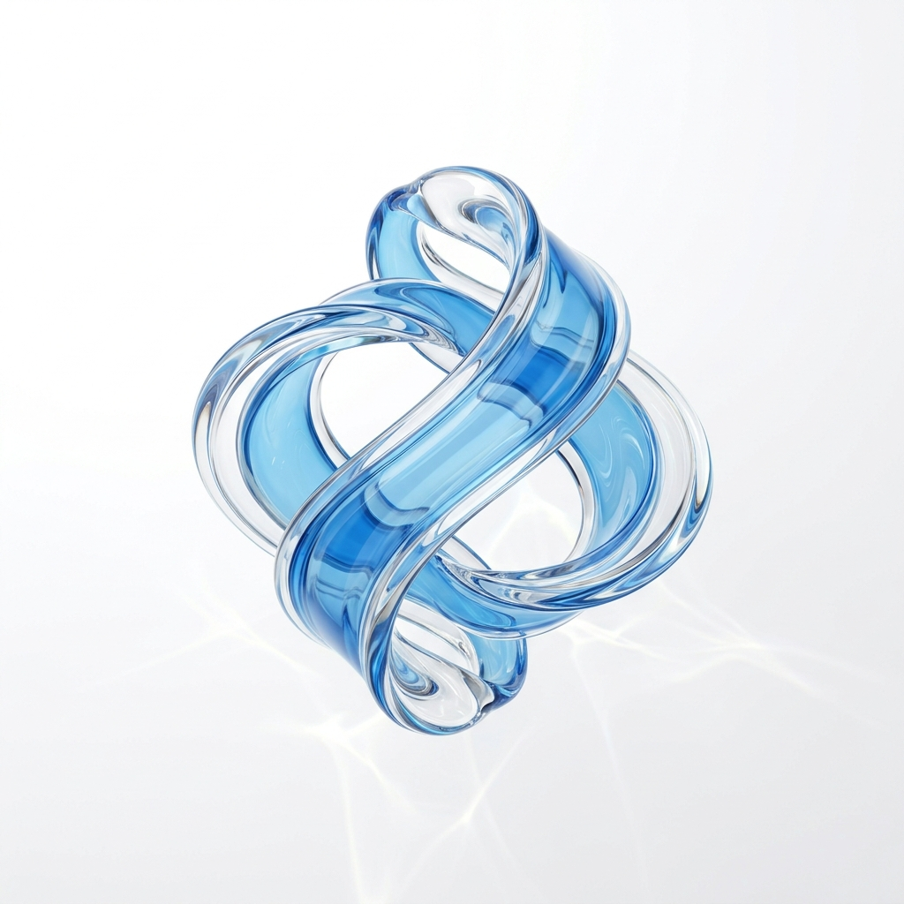

Yuqori Tezlik va Silliq Ishlash
Chatlar bir zumda ochiladi, animatsiyalar yengil ishlaydi va kuchsiz internetda ham barqaror aloqa ta’minlanadi.
Yaqinlaringiz va hamkasblaringiz bilan yuqori tezlikda xabar almashing, maxfiy suhbatlarni seyfda asrang — telefonda ham, Windows noutbukda ham.
Kundalik yozishmalaringizdan ko‘proq qulaylik oling
Chatlar bir zumda ochiladi, animatsiyalar yengil ishlaydi va kuchsiz internetda ham barqaror aloqa ta’minlanadi.
Yaqinlaringiz bilan ovozli va video suhbatlarni kechikishsiz va trafikni tejagan holda amalga oshiring.
Shaxsiy suhbatlar oddiy ro‘yxat va qidiruvdan butunlay yashiriladi — faqat sizning PIN kodingiz bilan ochiladi.
Telefon, Windows kompyuter va brauzer o‘rtasida barcha chatlar va katta fayllar bir zumda sinxronlanadi.
Bitta ilovada xohlagancha Telegram akkaunt ulang — Premium cheklovisiz, har biri mustaqil bildirishnomalar bilan ishlaydi.
Zo‘r TV, Sevimli TV, Toshkent va 29 ta O‘zbekiston kanallarini telefonda ham, kompyuterda ham to‘liq ekranda tomosha qiling.
TV bo‘limini ochish →Yonimizdagi tugmalarni bosing yoki qidiruv qatoriga 2027 PIN kodini tering — chatlar qanday yashirinishi va xiralashishini ko‘rasiz.
Toshkent vaqti bilan 01.01.2027 soat 00:00 da yangi 2027 oltin-zumrad dizayn, studiya rasmlari, 2027 Tabriknoma yaratuvchisi va Aurora boshqaruvi avtomatik ishga tushadi.
Barmoq izi va PIN asosida ko‘rinmas dialoglar himoyasi.
Telefondan noutbukka soniya ichida fayl va sessiya uzatish.
29 ta O‘zbekiston kanallari kechikishsiz va reklamasiz efirda.
Rasmiy Telegram bazasiga asoslangan muntazam sifat va tezlik yangilanishlari.

Shaxsiy raqamli sertifikat bilan imzolangan toza va ishonchli ilova.
Ilova faqat muloqot va qo‘ng‘iroqlar uchun zarur ruxsatlarnigina so‘raydi.
O‘zbekcha qulay interfeys, tiniq dizayn va rasmiy Telegram yonida parallel ishlash.
Rasmiy Telegram ilovangiz va eski chatlaringizga hech qanday zarar yetkazmasdan alohida ilova bo‘lib ishlaydi.
Zo‘r TV, Sevimli TV, Toshkent, Milliy TV, Futbol TV va 29 ta kanallarni telefonda ham, noutbukda ham qotishsiz Full HD formatda tomosha qiling.



Oddiy messenjer imkoniyatlaridan ko‘prog‘i — ortiqcha cheklovlarsiz.
Yo‘q! AeroGram alohida paket sifatida rasmiy Telegram yonida parallel o‘rnatiladi. Barcha chatlaringiz, kanallaringiz va media fayllaringiz xavfsiz saqlanadi.
v1.4.2 versiyadan boshlab cheksiz (∞) miqdorda akkaunt ulash mumkin — Premium obuna talab qilinmaydi va har bir akkaunt alohida bildirishnoma oladi.
Ha! Saytdagi Alohida TV bo‘limi telefon, planshet va kompyuterga moslashgan. “To‘liq ekran” belgisini bossangiz, efir ekraningizni to‘liq egallaydi.
Android va Windows v1.5.0 da seyf sozlamalarda ko‘rinmaydi: uni qidiruv maydoniga PIN kodingizni yozib, Studio tugmasini bosib turib yoki Ctrl+Shift+H orqali ochasiz.

AeroGram’ni hozir yuklab oling — telefon va noutbukda yanada erkin va xavfsiz yozishing.
Android (.apk) & Windows Laptop (.exe) • v1.5.0
O‘rnatish eslatmasi: Agar Android telefoningizda eski versiya ustidan o‘rnatishda imzo xatoligi chiqsa, avval eski AeroGram’ni o‘chirib yangi v1.5.0 ni o‘rnating — barcha Telegram chatlaringiz bulutda saqlanadi.
aerogram.website
AeroGram foydalanuvchilarning shaxsiy yozishmalarini yig‘maydi va uchinchi tomon serverlariga yubormaydi. Barcha chatlar, media fayllar va qo‘ng‘iroqlar rasmiy Telegram serverlari orqali himoyalangan tartibda ishlaydi.
Barcha interfeys va foydalanuvchi sozlamalari faqat qurilmangizning o‘zida saqlanadi.